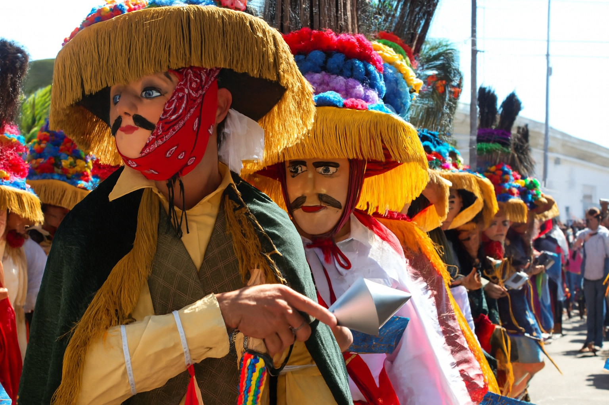
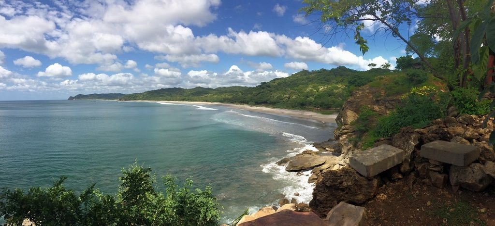
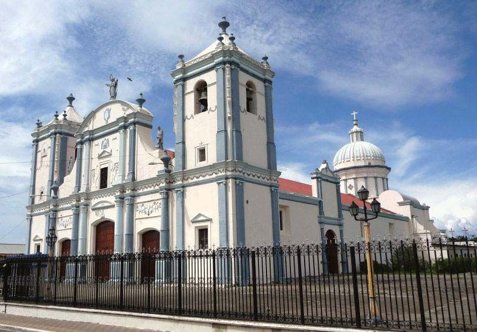
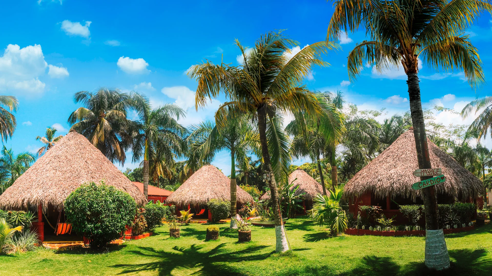

Siente el latido de nuestra tierra a través de cada experiencia
Nicaragua es un paraíso natural con volcanes activos, lagos cristalinos, selvas tropicales y playas vírgenes. Descubre ecosistemas que albergan especies únicas en el mundo.
Nuestra herencia indígena y colonial se fusiona en festividades coloridas, música tradicional y arte popular. Cada rincón cuenta una historia de resistencia y alegría.
Desde el gallo pinto al amanecer hasta el nacatamal en domingos familiares, nuestra gastronomía es un viaje sensorial que refleja la diversidad cultural del país.
Las tradiciones de Nicaragua son el reflejo más auténtico de su alma colectiva: una fusión vibrante de herencias indígenas, expresiones coloniales y creencias populares que han resistido el paso del tiempo. Desde los rituales religiosos hasta las celebraciones populares, cada tradición encarna siglos de historia, identidad y resistencia cultural. En este país centroamericano donde conviven más de 15 pueblos indígenas, las costumbres ancestrales como las del pueblo chorotega o misquito siguen vivas a través de danzas, lenguas y ceremonias comunitarias. Al mismo tiempo, las festividades católicas —como La Gritería, La Purísima o la Semana Santa en León y Granada— transforman las calles en escenarios de fervor, música de filarmónicas, altares coloridos y devoción colectiva.
No se puede hablar de las tradiciones nicaragüenses sin mencionar el icónico baile de El Güegüense, una joya del teatro popular declarada Patrimonio Oral e Intangible de la Humanidad por la UNESCO. Tampoco pueden faltar las fiestas patronales con sus “toros encuetados”, las procesiones a pie descalzo en honor a santos como San Sebastián en Diriamba, o las comidas tradicionales como el nacatamal, la chicha de maíz, o el vaho que se preparan en fechas específicas y celebraciones familiares. Las expresiones culturales de Nicaragua no se limitan a los eventos festivos: también se manifiestan en la forma en que se transmite el conocimiento oral, en la artesanía local (como las hamacas de Masaya o la cerámica negra de San Juan de Oriente), y en la música folclórica acompañada de marimbas y guitarras.


Aguas cristalinas y hermosas con una vista al mar maravillosa

Bella catedral de la ciudad de Rivas

Un paraiso en la tierra